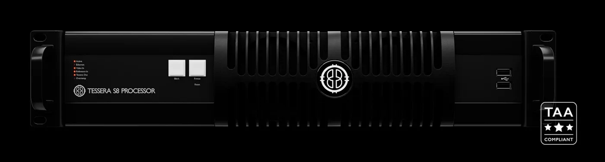

LED画面の画素数は？
パネルの枚数と並び、全体の幅・高さの画素数を共有。
映像をつなぐ・整える ↗EQUIPMENT / 82
LEDプロセッサー
4Kまでの映像を、HDMIや12G-SDIから受けてLEDへ送り出す。
KEY SPECIFICATIONS

画像を大きく見る ＋画像出典：Brompton 製品ページ
01 / ROLE & FLOW
実際の配線・端子構成は案件に合わせて決めます。
02 / BEFORE YOUR BRIEF
パネルの枚数と並び、全体の幅・高さの画素数を共有。
送り出し側の端子と解像度・フレームレートを合わせる。
受信側(パネル内の受信カード)が対応しているかを確認。
03 / CHOOSING THE RIGHT TOOL
中〜大規模のステージや中継で、4K までの映像を HDMI や 12G-SDI から受けて LED 画面に送る構成の検討に。
入力は HDMI 2.0b と 12G-SDI が 1 系統ずつ。出力は 1G の 8 系統で、出力のループ冗長(closed loop redundancy)に対応します。より大きな画面や 10G 出力が必要な場合は Tessera SX40、フルHDまでなら Tessera S4 と比べて選びます。
HDMI 入力は最大 4096×2160(プログレッシブのみ)・23.98〜250Hz、12G-SDI 入力は最大 4096×2160・23.98〜60Hz です。出力は 1 系統あたり 8bit・60Hz で約 52.5 万画素、合計で最大約 450 万画素。HDR(PQ・HLG)、Dynamic Calibration、ShutterSync、3D LUT の読み込みなどの機能があり、エンドツーエンドの遅延は 2 フレームとされています。本体は 482.6×88.9×406.4mm、質量 7.5kg、電源は AC100〜240V・50/60Hz の自動切替です。
参考資料：メーカー作成データシート(販売店掲載の写し) ↗(2026年11月9日照合)
LED画面の画素数と並び、入力する映像の本数と端子、操作席からLEDまでの距離をお聞かせください。本体・ケーブル・設定・本番操作を分けて、必要な範囲を整理します。セットの付属品や人員が自動で含まれる表示ではありません。